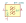
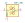
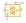
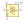
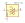
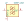
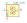

| Symbol |
Description |
BFCN-1445 | Description: 1420-1470MHz 50 Ohm Passive Band Pass Filter, FV1206
Keys: Mini-Circuits band pass filter
Datasheet: https://www.minicircuits.com/pdfs/BFCN-1445+.pdf |
BFCN-1525 | Description: 1480-1570MHz 50 Ohm Passive Band Pass Filter, FV1206
Keys: Mini-Circuits band pass filter
Datasheet: https://www.minicircuits.com/pdfs/BFCN-1525+.pdf |
BFCN-152W-75 | Description: 950-1970MHz 75 Ohm Passive Band Pass Filter, FV1206-7
Keys: Mini-Circuits band pass filter
Datasheet: https://www.minicircuits.com/pdfs/BFCN-1445+.pdf |
BFCN-1560 | Description: 1500-1620MHz 50 Ohm Passive Band Pass Filter, FV1206-1
Keys: Mini-Circuits band pass filter
Datasheet: https://www.minicircuits.com/pdfs/BFCN-1560+.pdf |
BFCN-1575 | Description: 1530-1620MHz 50 Ohm Passive Band Pass Filter, FV1206
Keys: Mini-Circuits band pass filter
Datasheet: https://www.minicircuits.com/pdfs/BFCN-1575+.pdf |
BFCN-1690 | Description: 1570-1810MHz 50 Ohm Passive Band Pass Filter, FV1206-1
Keys: Mini-Circuits band pass filter
Datasheet: https://www.minicircuits.com/pdfs/BFCN-1690+.pdf |
BFCN-1840 | Description: 1750-1930MHz 50 Ohm Passive Band Pass Filter, FV1206
Keys: Mini-Circuits band pass filter
Datasheet: https://www.minicircuits.com/pdfs/BFCN-1840+.pdf |
BFCN-1855 | Description: 1790-1920MHz 50 Ohm Passive Band Pass Filter, FV1206
Keys: Mini-Circuits band pass filter
Datasheet: https://www.minicircuits.com/pdfs/BFCN-1855+.pdf |
BFCN-1860 | Description: 1580-2200MHz 50 Ohm Passive Band Pass Filter, FV1206-4
Keys: Mini-Circuits band pass filter
Datasheet: https://www.minicircuits.com/pdfs/BFCN-1860+.pdf |
BFCN-1900 | Description: 1893-1920MHz 50 Ohm Passive Band Pass Filter, FV1206-5
Keys: Mini-Circuits band pass filter
Datasheet: https://www.minicircuits.com/pdfs/BFCN-1900+.pdf |
BFCN-1945 | Description: 1850-2040MHz 50 Ohm Passive Band Pass Filter, FV1206
Keys: Mini-Circuits band pass filter
Datasheet: https://www.minicircuits.com/pdfs/BFCN-1945+.pdf |
BFCN-2275 | Description: 2170-2380MHz 50 Ohm Passive Band Pass Filter, FV1206
Keys: Mini-Circuits band pass filter
Datasheet: https://www.minicircuits.com/pdfs/BFCN-2275+.pdf |
BFCN-2360 | Description: 2250-2470MHz 50 Ohm Passive Band Pass Filter, FV1206
Keys: Mini-Circuits band pass filter
Datasheet: https://www.minicircuits.com/pdfs/BFCN-2360+.pdf |
BFCN-2435 | Description: 2340-2530MHz 50 Ohm Passive Band Pass Filter, FV1206
Keys: Mini-Circuits band pass filter
Datasheet: https://www.minicircuits.com/pdfs/BFCN-2435+.pdf |
BFCN-2450 | Description: 2400-2550MHz 50 Ohm Passive Band Pass Filter, FV1206-4
Keys: Mini-Circuits band pass filter
Datasheet: https://www.minicircuits.com/pdfs/BFCN-2450+.pdf |
BFCN-2500 | Description: 2100-2900MHz 50 Ohm Passive Band Pass Filter, FV1206-4
Keys: Mini-Circuits band pass filter
Datasheet: https://www.minicircuits.com/pdfs/BFCN-2500+.pdf |
BFCN-2555 | Description: 2500-2610MHz 50 Ohm Passive Band Pass Filter, FV1206-1
Keys: Mini-Circuits band pass filter
Datasheet: https://www.minicircuits.com/pdfs/BFCN-2555+.pdf |
BFCN-2700 | Description: 2600-2800MHz 50 Ohm Passive Band Pass Filter, FV1206
Keys: Mini-Circuits band pass filter
Datasheet: https://www.minicircuits.com/pdfs/BFCN-2700+.pdf |
BFCN-2840 | Description: 2750-2930MHz 50 Ohm Passive Band Pass Filter, FV1206
Keys: Mini-Circuits band pass filter
Datasheet: https://www.minicircuits.com/pdfs/BFCN-2840+.pdf |
BFCN-2850 | Description: 2750-2950MHz 50 Ohm Passive Band Pass Filter, FV1206
Keys: Mini-Circuits band pass filter
Datasheet: https://www.minicircuits.com/pdfs/BFCN-2850+.pdf |
BFCN-2900 | Description: 2700-3100MHz 50 Ohm Passive Band Pass Filter, FV1206-1
Keys: Mini-Circuits band pass filter
Datasheet: https://www.minicircuits.com/pdfs/BFCN-2900+.pdf |
BFCN-2910 | Description: 2850-2970MHz 50 Ohm Passive Band Pass Filter, FV1206
Keys: Mini-Circuits band pass filter
Datasheet: https://www.minicircuits.com/pdfs/BFCN-2910+.pdf |
BFCN-2975 | Description: 2570-3440MHz 50 Ohm Passive Band Pass Filter, FV1206
Keys: Mini-Circuits band pass filter
Datasheet: https://www.minicircuits.com/pdfs/BFCN-2975+.pdf |
BFCN-3010 | Description: 2920-3100MHz 50 Ohm Passive Band Pass Filter, FV1206
Keys: Mini-Circuits band pass filter
Datasheet: https://www.minicircuits.com/pdfs/BFCN-3010+.pdf |
BFCN-3085 | Description: 2800-3400MHz 50 Ohm Passive Band Pass Filter, FV1206
Keys: Mini-Circuits band pass filter
Datasheet: https://www.minicircuits.com/pdfs/BFCN-3085+.pdf |
BFCN-3085A | Description: 2800-3400MHz 50 Ohm Passive Band Pass Filter, FV1206
Keys: Mini-Circuits band pass filter
Datasheet: https://www.minicircuits.com/pdfs/BFCN-3085A+.pdf |
BFCN-3115 | Description: 2720-3570MHz 50 Ohm Passive Band Pass Filter, FV1206
Keys: Mini-Circuits band pass filter
Datasheet: https://www.minicircuits.com/pdfs/BFCN-3115+.pdf |
BFCN-3600 | Description: 3300-3900MHz 50 Ohm Passive Band Pass Filter, FV1206
Keys: Mini-Circuits band pass filter
Datasheet: https://www.minicircuits.com/pdfs/BFCN-3600+.pdf |
BFCN-3700 | Description: 3000-4600MHz 50 Ohm Passive Band Pass Filter, FV1206-4
Keys: Mini-Circuits band pass filter
Datasheet: https://www.minicircuits.com/pdfs/BFCN-3700+.pdf |
BFCN-4100 | Description: 3700-4500MHz 50 Ohm Passive Band Pass Filter, FV1206
Keys: Mini-Circuits band pass filter
Datasheet: https://www.minicircuits.com/pdfs/BFCN-4100+.pdf |
BFCN-4440 | Description: 4200-4700MHz 50 Ohm Passive Band Pass Filter, FV1206
Keys: Mini-Circuits band pass filter
Datasheet: https://www.minicircuits.com/pdfs/BFCN-4440+.pdf |
BFCN-4800 | Description: 4400-5200MHz 50 Ohm Passive Band Pass Filter, FV1206
Keys: Mini-Circuits band pass filter
Datasheet: https://www.minicircuits.com/pdfs/BFCN-4800+.pdf |
BFCN-5100 | Description: 3100-7100MHz 50 Ohm Passive Band Pass Filter, FV1206-6
Keys: Mini-Circuits band pass filter
Datasheet: https://www.minicircuits.com/pdfs/BFCN-5100+.pdf |
BFCN-5200 | Description: 4250-6300MHz 50 Ohm Passive Band Pass Filter, FV1206-4
Keys: Mini-Circuits band pass filter
Datasheet: https://www.minicircuits.com/pdfs/BFCN-5200+.pdf |
BFCN-5540 | Description: 4620-6640MHz 50 Ohm Passive Band Pass Filter, FV1206-4
Keys: Mini-Circuits band pass filter
Datasheet: https://www.minicircuits.com/pdfs/BFCN-5540+.pdf |
BFCN-5750 | Description: 5650-5850MHz 50 Ohm Passive Band Pass Filter, FV1206-4
Keys: Mini-Circuits band pass filter
Datasheet: https://www.minicircuits.com/pdfs/BFCN-5750+.pdf |
BFCN-7200 | Description: 7100-7300MHz 50 Ohm Passive Band Pass Filter, FV1206-4
Keys: Mini-Circuits band pass filter
Datasheet: https://www.minicircuits.com/pdfs/BFCN-7200+.pdf |
BFCN-7331 | Description: 6850-7850MHz 50 Ohm Passive Band Pass Filter, FV1206-4
Keys: Mini-Circuits band pass filter
Datasheet: https://www.minicircuits.com/pdfs/BFCN-7331+.pdf |
BFCN-7350 | Description: 7150-7550MHz 50 Ohm Passive Band Pass Filter, FV1206-4
Keys: Mini-Circuits band pass filter
Datasheet: https://www.minicircuits.com/pdfs/BFCN-7350+.pdf |
BFCN-7500 | Description: 7450-7650MHz 50 Ohm Passive Band Pass Filter, FV1206-4
Keys: Mini-Circuits band pass filter
Datasheet: https://www.minicircuits.com/pdfs/BFCN-7500+.pdf |
BFCN-7700 | Description: 7500-7900MHz 50 Ohm Passive Band Pass Filter, FV1206-4
Keys: Mini-Circuits band pass filter
Datasheet: https://www.minicircuits.com/pdfs/BFCN-7700+.pdf |
BFCN-7900 | Description: 7800-8100MHz 50 Ohm Passive Band Pass Filter, FV1206-4
Keys: Mini-Circuits band pass filter
Datasheet: https://www.minicircuits.com/pdfs/BFCN-7900+.pdf |
BFCN-8000 | Description: 7900-8100MHz 50 Ohm Passive Band Pass Filter, FV1206-4
Keys: Mini-Circuits band pass filter
Datasheet: https://www.minicircuits.com/pdfs/BFCN-8000+.pdf |
BFCN-8350 | Description: 8250-8450MHz 50 Ohm Passive Band Pass Filter, FV1206-4
Keys: Mini-Circuits band pass filter
Datasheet: https://www.minicircuits.com/pdfs/BFCN-8350+.pdf |
BFCN-8450 | Description: 8350-8550MHz 50 Ohm Passive Band Pass Filter, FV1206-4
Keys: Mini-Circuits band pass filter
Datasheet: https://www.minicircuits.com/pdfs/BFCN-8450+.pdf |
BFCN-8650 | Description: 8550-8750MHz 50 Ohm Passive Band Pass Filter, FV1206-4
Keys: Mini-Circuits band pass filter
Datasheet: https://www.minicircuits.com/pdfs/BFCN-8650+.pdf |

BPF-A355 | Description: Bandpass Filter, 310 to 400 MHz, 50 Ohm, Mini-Circuits HQ1157
Keys: Bandpass Filter
Datasheet: https://www.minicircuits.com/pdfs/BPF-A355+.pdf |
HFCN-1000 | Description: 1000MHz 50 Ohm Passive High Pass Filter, FV1206
Keys: Mini-Circuits high pass filter
Datasheet: https://www.minicircuits.com/pdfs/HFCN-1000+.pdf |
HFCN-1080 | Description: 1080MHz 50 Ohm Passive High Pass Filter, FV1206
Keys: Mini-Circuits high pass filter
Datasheet: https://www.minicircuits.com/pdfs/HFCN-1080+.pdf |
HFCN-1100 | Description: 1100MHz 50 Ohm Passive High Pass Filter, FV1206
Keys: Mini-Circuits high pass filter
Datasheet: https://www.minicircuits.com/pdfs/HFCN-1100+.pdf |
HFCN-1150 | Description: 1150MHz 50 Ohm Passive High Pass Filter, FV1206
Keys: Mini-Circuits high pass filter
Datasheet: https://www.minicircuits.com/pdfs/HFCN-1150+.pdf |
HFCN-1200 | Description: 1180MHz 50 Ohm Passive High Pass Filter, FV1206
Keys: Mini-Circuits high pass filter
Datasheet: https://www.minicircuits.com/pdfs/HFCN-1200+.pdf |
HFCN-1200D | Description: 1180MHz 50 Ohm Passive High Pass Filter, DC capable, FV1206
Keys: Mini-Circuits high pass filter
Datasheet: https://www.minicircuits.com/pdfs/HFCN-1200D+.pdf |
HFCN-1300 | Description: 1300MHz 50 Ohm Passive High Pass Filter, FV1206
Keys: Mini-Circuits high pass filter
Datasheet: https://www.minicircuits.com/pdfs/HFCN-1300+.pdf |
HFCN-1300D | Description: 1300MHz 50 Ohm Passive High Pass Filter, DC capable, FV1206
Keys: Mini-Circuits high pass filter
Datasheet: https://www.minicircuits.com/pdfs/HFCN-1300D+.pdf |
HFCN-1320 | Description: 1320MHz 50 Ohm Passive High Pass Filter, FV1206
Keys: Mini-Circuits high pass filter
Datasheet: https://www.minicircuits.com/pdfs/HFCN-1320+.pdf |
HFCN-1320D | Description: 1320MHz 50 Ohm Passive High Pass Filter, DC capable, FV1206
Keys: Mini-Circuits high pass filter
Datasheet: https://www.minicircuits.com/pdfs/HFCN-1320D+.pdf |
HFCN-1322 | Description: 13300MHz 50 Ohm Passive High Pass Filter, FV1206-4
Keys: Mini-Circuits high pass filter
Datasheet: https://www.minicircuits.com/pdfs/HFCN-1322+.pdf |
HFCN-1500 | Description: 1550MHz 50 Ohm Passive High Pass Filter, FV1206
Keys: Mini-Circuits high pass filter
Datasheet: https://www.minicircuits.com/pdfs/HFCN-1500+.pdf |
HFCN-1500D | Description: 1550MHz 50 Ohm Passive High Pass Filter, DC capable, FV1206
Keys: Mini-Circuits high pass filter
Datasheet: https://www.minicircuits.com/pdfs/HFCN-1500D+.pdf |
HFCN-1600 | Description: 1600MHz 50 Ohm Passive High Pass Filter, FV1206
Keys: Mini-Circuits high pass filter
Datasheet: https://www.minicircuits.com/pdfs/HFCN-1600+.pdf |
HFCN-1600D | Description: 1600MHz 50 Ohm Passive High Pass Filter, DC capable, FV1206
Keys: Mini-Circuits high pass filter
Datasheet: https://www.minicircuits.com/pdfs/HFCN-1600D+.pdf |
HFCN-1760 | Description: 1760MHz 50 Ohm Passive High Pass Filter, FV1206
Keys: Mini-Circuits high pass filter
Datasheet: https://www.minicircuits.com/pdfs/HFCN-1760+.pdf |
HFCN-1810 | Description: 1810MHz 50 Ohm Passive High Pass Filter, FV1206
Keys: Mini-Circuits high pass filter
Datasheet: https://www.minicircuits.com/pdfs/HFCN-1810+.pdf |
HFCN-1810D | Description: 1810MHz 50 Ohm Passive High Pass Filter, DC capable, FV1206
Keys: Mini-Circuits high pass filter
Datasheet: https://www.minicircuits.com/pdfs/HFCN-1810D+.pdf |
HFCN-1910 | Description: 1910MHz 50 Ohm Passive High Pass Filter, FV1206
Keys: Mini-Circuits high pass filter
Datasheet: https://www.minicircuits.com/pdfs/HFCN-1910+.pdf |
HFCN-1910D | Description: 1910MHz 50 Ohm Passive High Pass Filter, DC capable, FV1206
Keys: Mini-Circuits high pass filter
Datasheet: https://www.minicircuits.com/pdfs/HFCN-1910D+.pdf |
HFCN-2000 | Description: 2000MHz 50 Ohm Passive High Pass Filter, FV1206
Keys: Mini-Circuits high pass filter
Datasheet: https://www.minicircuits.com/pdfs/HFCN-2000.pdf |
HFCN-2100 | Description: 2100MHz 50 Ohm Passive High Pass Filter, FV1206
Keys: Mini-Circuits high pass filter
Datasheet: https://www.minicircuits.com/pdfs/HFCN-2100+.pdf |
HFCN-2100D | Description: 2100MHz 50 Ohm Passive High Pass Filter, DC capable, FV1206
Keys: Mini-Circuits high pass filter
Datasheet: https://www.minicircuits.com/pdfs/HFCN-2100D+.pdf |
HFCN-2275 | Description: 2275MHz 50 Ohm Passive High Pass Filter, FV1206
Keys: Mini-Circuits high pass filter
Datasheet: https://www.minicircuits.com/pdfs/HFCN-2275+.pdf |
HFCN-2700 | Description: 2500MHz 50 Ohm Passive High Pass Filter, FV1206
Keys: Mini-Circuits high pass filter
Datasheet: https://www.minicircuits.com/pdfs/HFCN-2700+.pdf |
HFCN-2700A | Description: 2700MHz 50 Ohm Passive High Pass Filter, FV1206-1
Keys: Mini-Circuits high pass filter
Datasheet: https://www.minicircuits.com/pdfs/HFCN-2700A+.pdf |
HFCN-2700AD | Description: 2700MHz 50 Ohm Passive High Pass Filter, DC capable, FV1206-1
Keys: Mini-Circuits high pass filter
Datasheet: https://www.minicircuits.com/pdfs/HFCN-2700AD+.pdf |
HFCN-3100 | Description: 3100MHz 50 Ohm Passive High Pass Filter, FV1206-1
Keys: Mini-Circuits high pass filter
Datasheet: https://www.minicircuits.com/pdfs/HFCN-3100+.pdf |
HFCN-3100D | Description: 3100MHz 50 Ohm Passive High Pass Filter, DC capable, FV1206-1
Keys: Mini-Circuits high pass filter
Datasheet: https://www.minicircuits.com/pdfs/HFCN-3100D+.pdf |
HFCN-3500 | Description: 3500MHz 50 Ohm Passive High Pass Filter, FV1206-1
Keys: Mini-Circuits high pass filter
Datasheet: https://www.minicircuits.com/pdfs/HFCN-3500+.pdf |
HFCN-3500D | Description: 3500MHz 50 Ohm Passive High Pass Filter, DC capable, FV1206-1
Keys: Mini-Circuits high pass filter
Datasheet: https://www.minicircuits.com/pdfs/HFCN-3500D+.pdf |
HFCN-3800 | Description: 3800MHz 50 Ohm Passive High Pass Filter, FV1206-1
Keys: Mini-Circuits high pass filter
Datasheet: https://www.minicircuits.com/pdfs/HFCN-3800+.pdf |
HFCN-3800D | Description: 3800MHz 50 Ohm Passive High Pass Filter, DC capable, FV1206-1
Keys: Mini-Circuits high pass filter
Datasheet: https://www.minicircuits.com/pdfs/HFCN-3800D+.pdf |
HFCN-440 | Description: 440MHz 50 Ohm Passive High Pass Filter, FV1206
Keys: Mini-Circuits high pass filter
Datasheet: https://www.minicircuits.com/pdfs/HFCN-440+.pdf |
HFCN-4400 | Description: 4400MHz 50 Ohm Passive High Pass Filter, FV1206-1
Keys: Mini-Circuits high pass filter
Datasheet: https://www.minicircuits.com/pdfs/HFCN-4400+.pdf |
HFCN-4400D | Description: 4400MHz 50 Ohm Passive High Pass Filter, DC capable, FV1206-1
Keys: Mini-Circuits high pass filter
Datasheet: https://www.minicircuits.com/pdfs/HFCN-4400D+.pdf |
HFCN-4600 | Description: 4600MHz 50 Ohm Passive High Pass Filter, FV1206-1
Keys: Mini-Circuits high pass filter
Datasheet: https://www.minicircuits.com/pdfs/HFCN-4600+.pdf |
HFCN-5050 | Description: 5050MHz 50 Ohm Passive High Pass Filter, FV1206-1
Keys: Mini-Circuits high pass filter
Datasheet: https://www.minicircuits.com/pdfs/HFCN-5050+.pdf |
HFCN-5500 | Description: 5500MHz 50 Ohm Passive High Pass Filter, FV1206-1
Keys: Mini-Circuits high pass filter
Datasheet: https://www.minicircuits.com/pdfs/HFCN-5500+.pdf |
HFCN-5500D | Description: 5500MHz 50 Ohm Passive High Pass Filter, DC capable, FV1206-1
Keys: Mini-Circuits high pass filter
Datasheet: https://www.minicircuits.com/pdfs/HFCN-5500D+.pdf |
HFCN-6010 | Description: 6010MHz 50 Ohm Passive High Pass Filter, FV1206-1
Keys: Mini-Circuits high pass filter
Datasheet: https://www.minicircuits.com/pdfs/HFCN-6010+.pdf |
HFCN-650 | Description: 650MHz 50 Ohm Passive High Pass Filter, FV1206
Keys: Mini-Circuits high pass filter
Datasheet: https://www.minicircuits.com/pdfs/HFCN-650+.pdf |
HFCN-650D | Description: 650MHz 50 Ohm Passive High Pass Filter, DC capable, FV1206
Keys: Mini-Circuits high pass filter
Datasheet: https://www.minicircuits.com/pdfs/HFCN-650D+.pdf |
HFCN-672 | Description: 6275MHz 50 Ohm Passive High Pass Filter, FV1206-1
Keys: Mini-Circuits high pass filter
Datasheet: https://www.minicircuits.com/pdfs/HFCN-672+.pdf |
HFCN-7150 | Description: 7150MHz 50 Ohm Passive High Pass Filter, FV1206-1
Keys: Mini-Circuits high pass filter
Datasheet: https://www.minicircuits.com/pdfs/HFCN-7150+.pdf |
HFCN-740 | Description: 740MHz 50 Ohm Passive High Pass Filter, FV1206
Keys: Mini-Circuits high pass filter
Datasheet: https://www.minicircuits.com/pdfs/HFCN-740+.pdf |
HFCN-740D | Description: 740MHz 50 Ohm Passive High Pass Filter, DC capable, FV1206
Keys: Mini-Circuits high pass filter
Datasheet: https://www.minicircuits.com/pdfs/HFCN-740D+.pdf |
HFCN-7971 | Description: 8000MHz 50 Ohm Passive High Pass Filter, FV1206-1
Keys: Mini-Circuits high pass filter
Datasheet: https://www.minicircuits.com/pdfs/HFCN-7971+.pdf |
HFCN-8400 | Description: 8400MHz 50 Ohm Passive High Pass Filter, FV1206-1
Keys: Mini-Circuits high pass filter
Datasheet: https://www.minicircuits.com/pdfs/HFCN-8400+.pdf |
HFCN-8400D | Description: 8400MHz 50 Ohm Passive High Pass Filter, DC capable, FV1206-1
Keys: Mini-Circuits high pass filter
Datasheet: https://www.minicircuits.com/pdfs/HFCN-8400D+.pdf |
HFCN-880 | Description: 880MHz 50 Ohm Passive High Pass Filter, FV1206
Keys: Mini-Circuits high pass filter
Datasheet: https://www.minicircuits.com/pdfs/HFCN-880+.pdf |
HFCN-880D | Description: 880MHz 50 Ohm Passive High Pass Filter, DC capable, FV1206
Keys: Mini-Circuits high pass filter
Datasheet: https://www.minicircuits.com/pdfs/HFCN-880D+.pdf |
HFCN-9700 | Description: 9070MHz 50 Ohm Passive High Pass Filter, FV1206-4
Keys: Mini-Circuits high pass filter
Datasheet: https://www.minicircuits.com/pdfs/HFCN-9700+.pdf |
LFCN-1000 | Description: 1000MHz 50 Ohm Passive Low Pass Filter, FV1206
Keys: Mini-Circuits low pass filter
Datasheet: https://www.minicircuits.com/pdfs/LFCN-1000+.pdf |
LFCN-1000D | Description: 1000MHz 50 Ohm Passive Low Pass Filter, DC capable, FV1206
Keys: Mini-Circuits low pass filter
Datasheet: https://www.minicircuits.com/pdfs/LFCN-1000D+.pdf |
LFCN-105 | Description: 105MHz 50 Ohm Passive Low Pass Filter, FV1206
Keys: Mini-Circuits low pass filter
Datasheet: https://www.minicircuits.com/pdfs/LFCN-105+.pdf |
LFCN-113 | Description: 11000MHz 50 Ohm Passive Low Pass Filter, FV1206-4
Keys: Mini-Circuits low pass filter
Datasheet: https://www.minicircuits.com/pdfs/LFCN-113+.pdf |
LFCN-120 | Description: 120MHz 50 Ohm Passive Low Pass Filter, FV1206
Keys: Mini-Circuits low pass filter
Datasheet: https://www.minicircuits.com/pdfs/LFCN-120+.pdf |
LFCN-1200 | Description: 1200MHz 50 Ohm Passive Low Pass Filter, FV1206
Keys: Mini-Circuits low pass filter
Datasheet: https://www.minicircuits.com/pdfs/LFCN-1200+.pdf |
LFCN-1200D | Description: 1200MHz 50 Ohm Passive Low Pass Filter, DC capable, FV1206
Keys: Mini-Circuits low pass filter
Datasheet: https://www.minicircuits.com/pdfs/LFCN-1200D+.pdf |
LFCN-123 | Description: 12000MHz 50 Ohm Passive Low Pass Filter, FV1206-4
Keys: Mini-Circuits low pass filter
Datasheet: https://www.minicircuits.com/pdfs/LFCN-123+.pdf |
LFCN-1282 | Description: 12800MHz 50 Ohm Passive Low Pass Filter, FV1206-4
Keys: Mini-Circuits low pass filter
Datasheet: https://www.minicircuits.com/pdfs/LFCN-1282+.pdf |
LFCN-1325 | Description: 1325MHz 50 Ohm Passive Low Pass Filter, FV1206
Keys: Mini-Circuits low pass filter
Datasheet: https://www.minicircuits.com/pdfs/LFCN-1325+.pdf |
LFCN-1400 | Description: 1400MHz 50 Ohm Passive Low Pass Filter, FV1206
Keys: Mini-Circuits low pass filter
Datasheet: https://www.minicircuits.com/pdfs/LFCN-1400+.pdf |
LFCN-1400D | Description: 1400MHz 50 Ohm Passive Low Pass Filter, DC capable, FV1206
Keys: Mini-Circuits low pass filter
Datasheet: https://www.minicircuits.com/pdfs/LFCN-1400D+.pdf |
LFCN-1450 | Description: 1450MHz 50 Ohm Passive Low Pass Filter, FV1206
Keys: Mini-Circuits low pass filter
Datasheet: https://www.minicircuits.com/pdfs/LFCN-1450+.pdf |
LFCN-1500 | Description: 1500MHz 50 Ohm Passive Low Pass Filter, FV1206
Keys: Mini-Circuits low pass filter
Datasheet: https://www.minicircuits.com/pdfs/LFCN-1500+.pdf |
LFCN-1500D | Description: 1500MHz 50 Ohm Passive Low Pass Filter, DC capable, FV1206
Keys: Mini-Circuits low pass filter
Datasheet: https://www.minicircuits.com/pdfs/LFCN-1500D+.pdf |
LFCN-1525 | Description: 1525MHz 50 Ohm Passive Low Pass Filter, FV1206
Keys: Mini-Circuits low pass filter
Datasheet: https://www.minicircuits.com/pdfs/LFCN-1525+.pdf |
LFCN-1525D | Description: 1525MHz 50 Ohm Passive Low Pass Filter, DC capable, FV1206
Keys: Mini-Circuits low pass filter
Datasheet: https://www.minicircuits.com/pdfs/LFCN-1525D+.pdf |
LFCN-1575 | Description: 1575MHz 50 Ohm Passive Low Pass Filter, FV1206
Keys: Mini-Circuits low pass filter
Datasheet: https://www.minicircuits.com/pdfs/LFCN-1575+.pdf |
LFCN-1575D | Description: 1575MHz 50 Ohm Passive Low Pass Filter, DC capable, FV1206
Keys: Mini-Circuits low pass filter
Datasheet: https://www.minicircuits.com/pdfs/LFCN-1575D+.pdf |
LFCN-160 | Description: 160MHz 50 Ohm Passive Low Pass Filter, FV1206
Keys: Mini-Circuits low pass filter
Datasheet: https://www.minicircuits.com/pdfs/LFCN-160+.pdf |
LFCN-1700 | Description: 1700MHz 50 Ohm Passive Low Pass Filter, FV1206
Keys: Mini-Circuits low pass filter
Datasheet: https://www.minicircuits.com/pdfs/LFCN-1700+.pdf |
LFCN-1700D | Description: 1700MHz 50 Ohm Passive Low Pass Filter, DC capable, FV1206
Keys: Mini-Circuits low pass filter
Datasheet: https://www.minicircuits.com/pdfs/LFCN-1700D+.pdf |
LFCN-180 | Description: 180MHz 50 Ohm Passive Low Pass Filter, FV1206
Keys: Mini-Circuits low pass filter
Datasheet: https://www.minicircuits.com/pdfs/LFCN-180+.pdf |
LFCN-1800 | Description: 1800MHz 50 Ohm Passive Low Pass Filter, FV1206
Keys: Mini-Circuits low pass filter
Datasheet: https://www.minicircuits.com/pdfs/LFCN-1800+.pdf |
LFCN-1800D | Description: 1800MHz 50 Ohm Passive Low Pass Filter, DC capable, FV1206
Keys: Mini-Circuits low pass filter
Datasheet: https://www.minicircuits.com/pdfs/LFCN-1800D+.pdf |
LFCN-190 | Description: 190MHz 50 Ohm Passive Low Pass Filter, FV1206
Keys: Mini-Circuits low pass filter
Datasheet: https://www.minicircuits.com/pdfs/LFCN-190+.pdf |
LFCN-2000 | Description: 2000MHz 50 Ohm Passive Low Pass Filter, FV1206
Keys: Mini-Circuits low pass filter
Datasheet: https://www.minicircuits.com/pdfs/LFCN-2000+.pdf |
LFCN-2000D | Description: 2000MHz 50 Ohm Passive Low Pass Filter, DC capable, FV1206
Keys: Mini-Circuits low pass filter
Datasheet: https://www.minicircuits.com/pdfs/LFCN-2000D+.pdf |
LFCN-225 | Description: 225MHz 50 Ohm Passive Low Pass Filter, FV1206
Keys: Mini-Circuits low pass filter
Datasheet: https://www.minicircuits.com/pdfs/LFCN-225+.pdf |
LFCN-2250 | Description: 2200MHz 50 Ohm Passive Low Pass Filter, FV1206
Keys: Mini-Circuits low pass filter
Datasheet: https://www.minicircuits.com/pdfs/LFCN-2250+.pdf |
LFCN-2250D | Description: 2250MHz 50 Ohm Passive Low Pass Filter, DC capable, FV1206
Keys: Mini-Circuits low pass filter
Datasheet: https://www.minicircuits.com/pdfs/LFCN-2250D+.pdf |
LFCN-225D | Description: 225MHz 50 Ohm Passive Low Pass Filter, DC capable, FV1206
Keys: Mini-Circuits low pass filter
Datasheet: https://www.minicircuits.com/pdfs/LFCN-225D+.pdf |
LFCN-2290 | Description: 2290MHz 50 Ohm Passive Low Pass Filter, FV1206
Keys: Mini-Circuits low pass filter
Datasheet: https://www.minicircuits.com/pdfs/LFCN-2290+.pdf |
LFCN-2400 | Description: 2400MHz 50 Ohm Passive Low Pass Filter, FV1206
Keys: Mini-Circuits low pass filter
Datasheet: https://www.minicircuits.com/pdfs/LFCN-2400+.pdf |
LFCN-2400D | Description: 2400MHz 50 Ohm Passive Low Pass Filter, DC capable, FV1206
Keys: Mini-Circuits low pass filter
Datasheet: https://www.minicircuits.com/pdfs/LFCN-2400D+.pdf |
LFCN-2500 | Description: 2500MHz 50 Ohm Passive Low Pass Filter, FV1206
Keys: Mini-Circuits low pass filter
Datasheet: https://www.minicircuits.com/pdfs/LFCN-2500+.pdf |
LFCN-2500D | Description: 2500MHz 50 Ohm Passive Low Pass Filter, DC capable, FV1206
Keys: Mini-Circuits low pass filter
Datasheet: https://www.minicircuits.com/pdfs/LFCN-2500D+.pdf |
LFCN-2600 | Description: 2600MHz 50 Ohm Passive Low Pass Filter, FV1206
Keys: Mini-Circuits low pass filter
Datasheet: https://www.minicircuits.com/pdfs/LFCN-2600+.pdf |
LFCN-2600D | Description: 2600MHz 50 Ohm Passive Low Pass Filter, DC capable, FV1206
Keys: Mini-Circuits low pass filter
Datasheet: https://www.minicircuits.com/pdfs/LFCN-2600D+.pdf |
LFCN-2750 | Description: 2750MHz 50 Ohm Passive Low Pass Filter, FV1206
Keys: Mini-Circuits low pass filter
Datasheet: https://www.minicircuits.com/pdfs/LFCN-2750+.pdf |
LFCN-2750D | Description: 2750MHz 50 Ohm Passive Low Pass Filter, DC capable, FV1206
Keys: Mini-Circuits low pass filter
Datasheet: https://www.minicircuits.com/pdfs/LFCN-2750D+.pdf |
LFCN-2850 | Description: 2800MHz 50 Ohm Passive Low Pass Filter, FV1206
Keys: Mini-Circuits low pass filter
Datasheet: https://www.minicircuits.com/pdfs/LFCN-2850+.pdf |
LFCN-2850D | Description: 2800MHz 50 Ohm Passive Low Pass Filter, DC capable, FV1206
Keys: Mini-Circuits low pass filter
Datasheet: https://www.minicircuits.com/pdfs/LFCN-2850D+.pdf |
LFCN-3000 | Description: 3000MHz 50 Ohm Passive Low Pass Filter, FV1206
Keys: Mini-Circuits low pass filter
Datasheet: https://www.minicircuits.com/pdfs/LFCN-3000+.pdf |
LFCN-3000D | Description: 3000MHz 50 Ohm Passive Low Pass Filter, DC capable, FV1206
Keys: Mini-Circuits low pass filter
Datasheet: https://www.minicircuits.com/pdfs/LFCN-3000D+.pdf |
LFCN-320 | Description: 320MHz 50 Ohm Passive Low Pass Filter, FV1206
Keys: Mini-Circuits low pass filter
Datasheet: https://www.minicircuits.com/pdfs/LFCN-320+.pdf |
LFCN-320D | Description: 320MHz 50 Ohm Passive Low Pass Filter, DC capable, FV1206
Keys: Mini-Circuits low pass filter
Datasheet: https://www.minicircuits.com/pdfs/LFCN-320D+.pdf |
LFCN-3400 | Description: 3400MHz 50 Ohm Passive Low Pass Filter, FV1206
Keys: Mini-Circuits low pass filter
Datasheet: https://www.minicircuits.com/pdfs/LFCN-3400+.pdf |
LFCN-3400D | Description: 3400MHz 50 Ohm Passive Low Pass Filter, DC capable, FV1206
Keys: Mini-Circuits low pass filter
Datasheet: https://www.minicircuits.com/pdfs/LFCN-3400D+.pdf |
LFCN-3800 | Description: 3900MHz 50 Ohm Passive Low Pass Filter, FV1206
Keys: Mini-Circuits low pass filter
Datasheet: https://www.minicircuits.com/pdfs/LFCN-3800+.pdf |
LFCN-3800D | Description: 3900MHz 50 Ohm Passive Low Pass Filter, DC capable, FV1206
Keys: Mini-Circuits low pass filter
Datasheet: https://www.minicircuits.com/pdfs/LFCN-3800D+.pdf |
LFCN-400 | Description: 400MHz 50 Ohm Passive Low Pass Filter, FV1206
Keys: Mini-Circuits low pass filter
Datasheet: https://www.minicircuits.com/pdfs/LFCN-400+.pdf |
LFCN-400D | Description: 400MHz 50 Ohm Passive Low Pass Filter, DC capable, FV1206
Keys: Mini-Circuits low pass filter
Datasheet: https://www.minicircuits.com/pdfs/LFCN-400D+.pdf |
LFCN-4400 | Description: 4400MHz 50 Ohm Passive Low Pass Filter, FV1206
Keys: Mini-Circuits low pass filter
Datasheet: https://www.minicircuits.com/pdfs/LFCN-4400+.pdf |
LFCN-4400D | Description: 4400MHz 50 Ohm Passive Low Pass Filter, DC capable, FV1206
Keys: Mini-Circuits low pass filter
Datasheet: https://www.minicircuits.com/pdfs/LFCN-4400D+.pdf |
LFCN-490 | Description: 490MHz 50 Ohm Passive Low Pass Filter, FV1206
Keys: Mini-Circuits low pass filter
Datasheet: https://www.minicircuits.com/pdfs/LFCN-490+.pdf |
LFCN-490D | Description: 490MHz 50 Ohm Passive Low Pass Filter, DC capable, FV1206
Keys: Mini-Circuits low pass filter
Datasheet: https://www.minicircuits.com/pdfs/LFCN-490D+.pdf |
LFCN-5000 | Description: 5000MHz 50 Ohm Passive Low Pass Filter, FV1206
Keys: Mini-Circuits low pass filter
Datasheet: https://www.minicircuits.com/pdfs/LFCN-5000+.pdf |
LFCN-5000D | Description: 5000MHz 50 Ohm Passive Low Pass Filter, DC capable, FV1206
Keys: Mini-Circuits low pass filter
Datasheet: https://www.minicircuits.com/pdfs/LFCN-5000D+.pdf |
LFCN-530 | Description: 530MHz 50 Ohm Passive Low Pass Filter, FV1206
Keys: Mini-Circuits low pass filter
Datasheet: https://www.minicircuits.com/pdfs/LFCN-530+.pdf |
LFCN-530D | Description: 530MHz 50 Ohm Passive Low Pass Filter, DC capable, FV1206
Keys: Mini-Circuits low pass filter
Datasheet: https://www.minicircuits.com/pdfs/LFCN-530D+.pdf |
LFCN-5500 | Description: 5500MHz 50 Ohm Passive Low Pass Filter, FV1206
Keys: Mini-Circuits low pass filter
Datasheet: https://www.minicircuits.com/pdfs/LFCN-5500+.pdf |
LFCN-5500D | Description: 5500MHz 50 Ohm Passive Low Pass Filter, DC capable, FV1206
Keys: Mini-Circuits low pass filter
Datasheet: https://www.minicircuits.com/pdfs/LFCN-5500D+.pdf |
LFCN-575 | Description: 575MHz 50 Ohm Passive Low Pass Filter, FV1206
Keys: Mini-Circuits low pass filter
Datasheet: https://www.minicircuits.com/pdfs/LFCN-575+.pdf |
LFCN-575D | Description: 575MHz 50 Ohm Passive Low Pass Filter, DC capable, FV1206
Keys: Mini-Circuits low pass filter
Datasheet: https://www.minicircuits.com/pdfs/LFCN-575D+.pdf |
LFCN-5850 | Description: 5850MHz 50 Ohm Passive Low Pass Filter, FV1206
Keys: Mini-Circuits low pass filter
Datasheet: https://www.minicircuits.com/pdfs/LFCN-5850+.pdf |
LFCN-5850D | Description: 5850MHz 50 Ohm Passive Low Pass Filter, DC capable, FV1206
Keys: Mini-Circuits low pass filter
Datasheet: https://www.minicircuits.com/pdfs/LFCN-5850D+.pdf |
LFCN-6000 | Description: 6000MHz 50 Ohm Passive Low Pass Filter, FV1206
Keys: Mini-Circuits low pass filter
Datasheet: https://www.minicircuits.com/pdfs/LFCN-6000+.pdf |
LFCN-6000D | Description: 6000MHz 50 Ohm Passive Low Pass Filter, DC capable, FV1206
Keys: Mini-Circuits low pass filter
Datasheet: https://www.minicircuits.com/pdfs/LFCN-6000D+.pdf |
LFCN-630 | Description: 630MHz 50 Ohm Passive Low Pass Filter, FV1206
Keys: Mini-Circuits low pass filter
Datasheet: https://www.minicircuits.com/pdfs/LFCN-630+.pdf |
LFCN-630D | Description: 630MHz 50 Ohm Passive Low Pass Filter, DC capable, FV1206
Keys: Mini-Circuits low pass filter
Datasheet: https://www.minicircuits.com/pdfs/LFCN-630D+.pdf |
LFCN-6400 | Description: 6400MHz 50 Ohm Passive Low Pass Filter, FV1206
Keys: Mini-Circuits low pass filter
Datasheet: https://www.minicircuits.com/pdfs/LFCN-6400+.pdf |
LFCN-6400D | Description: 6400MHz 50 Ohm Passive Low Pass Filter, DC capable, FV1206
Keys: Mini-Circuits low pass filter
Datasheet: https://www.minicircuits.com/pdfs/LFCN-6400D+.pdf |
LFCN-6700 | Description: 6700MHz 50 Ohm Passive Low Pass Filter, FV1206
Keys: Mini-Circuits low pass filter
Datasheet: https://www.minicircuits.com/pdfs/LFCN-6700+.pdf |
LFCN-6700D | Description: 6700MHz 50 Ohm Passive Low Pass Filter, DC cabable, FV1206
Keys: Mini-Circuits low pass filter
Datasheet: https://www.minicircuits.com/pdfs/LFCN-6700D+.pdf |
LFCN-7200 | Description: 7200MHz 50 Ohm Passive Low Pass Filter, FV1206
Keys: Mini-Circuits low pass filter
Datasheet: https://www.minicircuits.com/pdfs/LFCN-7200+.pdf |
LFCN-7200D | Description: 7200MHz 50 Ohm Passive Low Pass Filter, DC cabable, FV1206
Keys: Mini-Circuits low pass filter
Datasheet: https://www.minicircuits.com/pdfs/LFCN-7200D+.pdf |
LFCN-722 | Description: 7200MHz 50 Ohm Passive Low Pass Filter, FV1206
Keys: Mini-Circuits low pass filter
Datasheet: https://www.minicircuits.com/pdfs/LFCN-722+.pdf |
LFCN-80 | Description: 80MHz 50 Ohm Passive Low Pass Filter, FV1206
Keys: Mini-Circuits low pass filter
Datasheet: https://www.minicircuits.com/pdfs/LFCN-80+.pdf |
LFCN-800 | Description: 800MHz 50 Ohm Passive Low Pass Filter, FV1206
Keys: Mini-Circuits low pass filter
Datasheet: https://www.minicircuits.com/pdfs/LFCN-800+.pdf |
LFCN-800D | Description: 800MHz 50 Ohm Passive Low Pass Filter, DC cabable, FV1206
Keys: Mini-Circuits low pass filter
Datasheet: https://www.minicircuits.com/pdfs/LFCN-800D+.pdf |
LFCN-8400 | Description: 8400MHz 50 Ohm Passive Low Pass Filter, FV1206-4
Keys: Mini-Circuits low pass filter
Datasheet: https://www.minicircuits.com/pdfs/LFCN-8400+.pdf |
LFCN-8440 | Description: 8440MHz 50 Ohm Passive Low Pass Filter, FV1206-4
Keys: Mini-Circuits low pass filter
Datasheet: https://www.minicircuits.com/pdfs/LFCN-8440+.pdf |
LFCN-900 | Description: 850MHz 50 Ohm Passive Low Pass Filter, FV1206
Keys: Mini-Circuits low pass filter
Datasheet: https://www.minicircuits.com/pdfs/LFCN-900+.pdf |
LFCN-900D | Description: 850MHz 50 Ohm Passive Low Pass Filter, DC cabable, FV1206
Keys: Mini-Circuits low pass filter
Datasheet: https://www.minicircuits.com/pdfs/LFCN-900D+.pdf |
LFCN-9170 | Description: 9170MHz 50 Ohm Passive Low Pass Filter, FV1206-4
Keys: Mini-Circuits low pass filter
Datasheet: https://www.minicircuits.com/pdfs/LFCN-9170+.pdf |
LFCN-95 | Description: 95MHz 50 Ohm Passive Low Pass Filter, FV1206
Keys: Mini-Circuits low pass filter
Datasheet: https://www.minicircuits.com/pdfs/LFCN-95+.pdf |
LPF-B0R3 | Description: Low Pass Filter, DC to 0.3 MHz, 50 Ohm, Mini-Circuits HZ1198
Keys: low pass filter
Datasheet: https://www.minicircuits.com/pdfs/LPF-B0R3+.pdf |

RBP-280 | Description: Bandpass Filter, 260 to 310 MHz, 50 Ohm, Mini-Circuits GP731
Keys: bandpass filter rf
Datasheet: https://www.minicircuits.com/pdfs/RBP-280+.pdf |

RBPF-246 | Description: Bandpass Filter, 236 to 265 MHz, 50 Ohm, Mini-Circuits CK605
Keys: Bandpass Filter
Datasheet: https://www.minicircuits.com/pdfs/RBPF-246+.pdf |

RLP-30 | Description: Low Pass Filter, DC to 30 MHz, 50 Ohm, Mini-Circuits GP1212
Keys: Low Pass Filter
Datasheet: https://www.minicircuits.com/pdfs/RLP-30+.pdf |

SCHF-31 | Description: High Pass Filter, 31 to 1500 MHz, 50 Ohm, Mini-Circuits YY161
Keys: highpass filter rf
Datasheet: https://www.minicircuits.com/pdfs/SCHF-31+.pdf |
SXBP-100 | Description: Bandpass Filter, 87 to 117 MHz, 50 Ohm, Mini-Circuits HF1139
Keys: bandpass filter
Datasheet: https://www.minicircuits.com/pdfs/SXBP-100+.pdf |
SXBP-140 | Description: Bandpass Filter, 130 to 150 MHz, 50 Ohm, Mini-Circuits HF1139
Keys: Mini-Circuits Band-Pass Filter
Datasheet: https://www.minicircuits.com/pdfs/SXBP-140+.pdf |

SXBP-202 | Description: Bandpass Filter, 198 to 206 MHz, 50 Ohm, Mini-Circuits HF1139
Keys: bandpass filter
Datasheet: https://www.minicircuits.com/pdfs/SXBP-202+.pdf |

SXBP-27R5 | Description: Bandpass Filter, 24 to 31 MHz, 50 Ohm, Mini-Circuits HF1139
Keys: bandpass filter
Datasheet: https://www.minicircuits.com/pdfs/SXBP-27R5+.pdf |